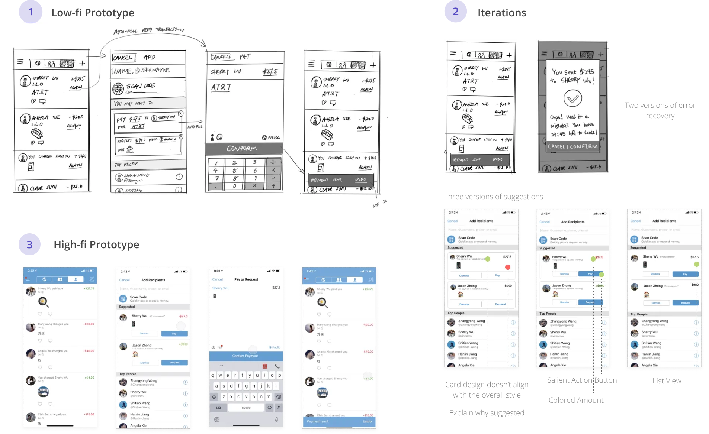
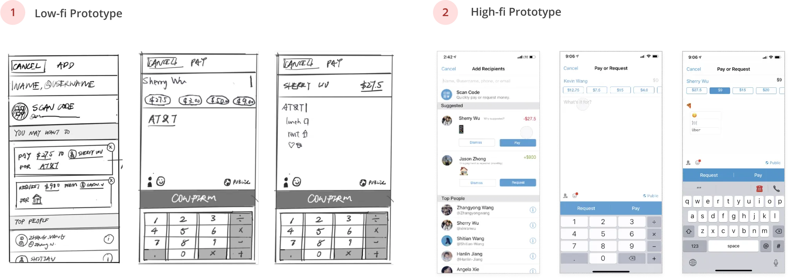
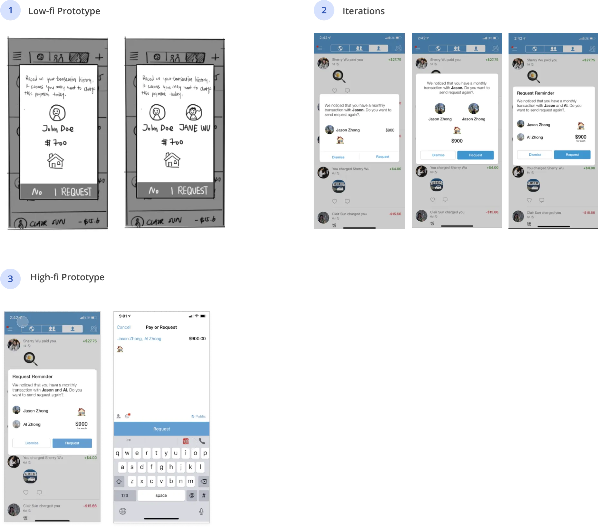

AI-Adapted
Transaction Experience
Key iterations
Key iterations
Key iterations
This project is about practicing a method to apply AI on simplifying workflows. We successfully identified the workflow with potentials and iterated to find the right way for adaptation.
Due to the short time of this project and the educational purpose, we couldn't do thorough research to validate the user value of our idea. We also couldn't do enough user testing on the adapted workflow. So if given more time, I'd focus on these two part more.